Este addon recorta personas y objetos de su fondo (croma verde, azul o cualquier fondo) con el modelo CorridorKey 2.0 sin salir de Blender. Eliges el clip, le dices quién es el sujeto si hace falta, pulsas Grabar recorte y el resultado vuelve solo a la línea de tiempo o a la escena 3D.
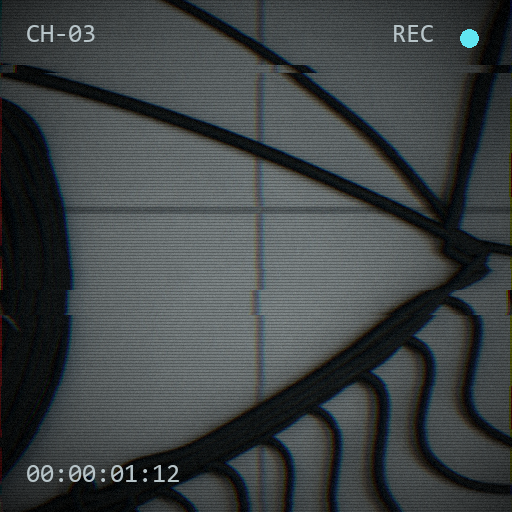
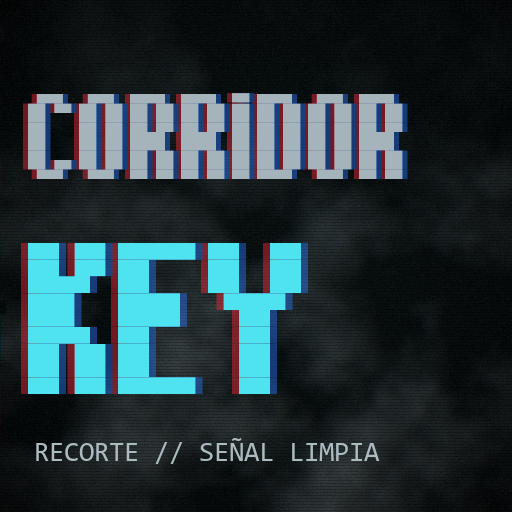
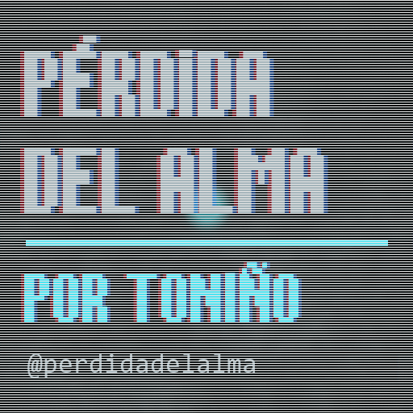
01 · antes de empezarQué necesitas
- Blender 4.2 o más nuevo (probado en 4.5).
- Tarjeta gráfica NVIDIA RTX serie 30 o más nueva. Con 4 GB de VRAM llega hasta 1440p; para 4K, 6 GB.
- Unos 10 GB libres en el disco y conexión a internet para la primera instalación.
gity Python 3.10–3.13 instalados en el sistema (solo para instalar).
02 · instalaciónInstalar
corridorkey_blender.zip. Activa CorridorKey para Blender.
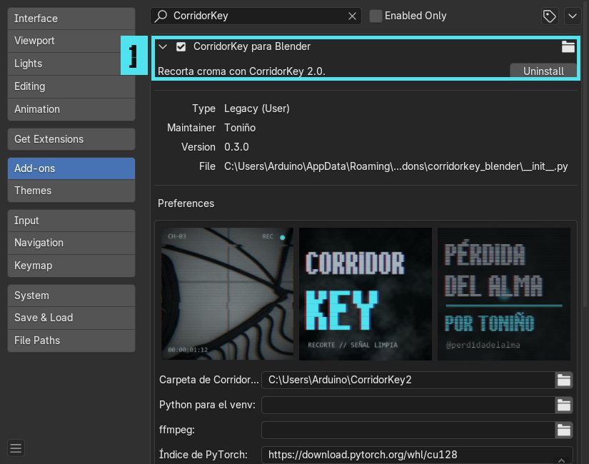
C:\Users\<tú>\CorridorKey2.
El avance se ve en la misma ventana; Blender sigue funcionando mientras tanto.
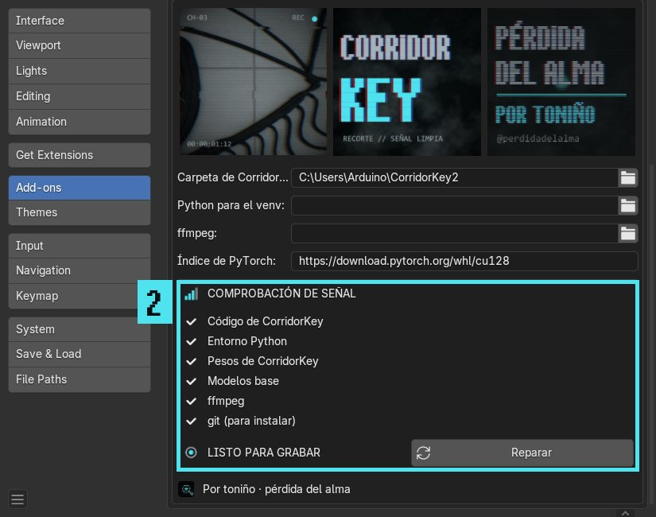
03 · el panelDónde está
Pulsa N en el Editor de secuencias, en el Editor de clips o en la Vista 3D y abre la pestaña CorridorKey. Arriba está el tríptico, debajo el botón grande y las secciones.
| Sección | Para qué sirve |
|---|---|
| Origen | Qué se recorta. En Automático usa la tira activa del VSE o el clip abierto en el editor de clips; en la Vista 3D, los planos seleccionados, el fondo de la cámara o un archivo. Solo los primeros procesa N fotogramas para probar rápido. |
| Pista del sujeto | Opcional. Le dice al modelo a quién quieres conservar (ver abajo). |
| Salida | Qué archivos sacar, en qué formato, cuánto derrame verde quitar y qué hacer al acabar. |
| Memoria de la GPU | Normalmente en Automática. Si da error de memoria, Poca VRAM. |
| Cintas | Los trabajos en marcha y terminados, con su progreso, carpeta y registro. |
| Señal | Créditos, enlaces y estas instrucciones. |
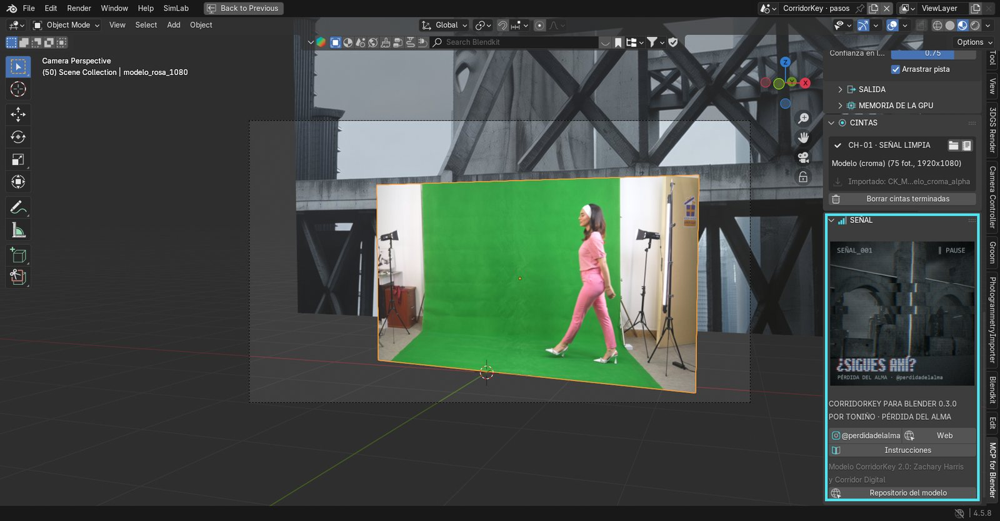
04 · usoRecortar un plano
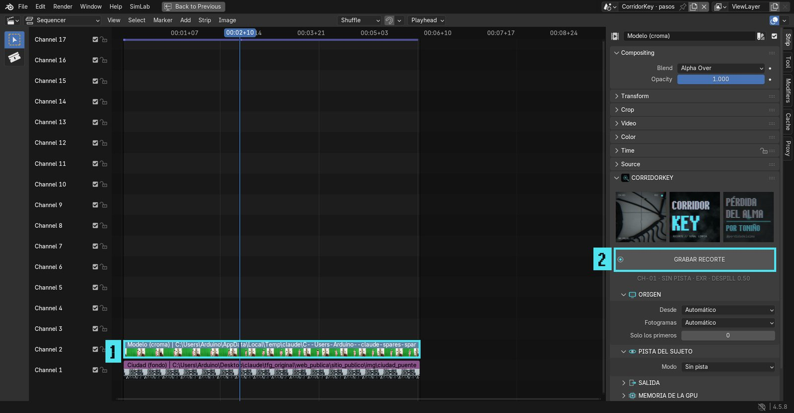
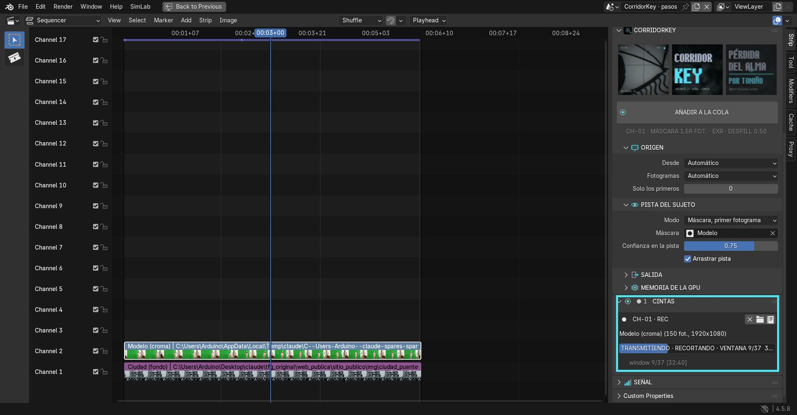
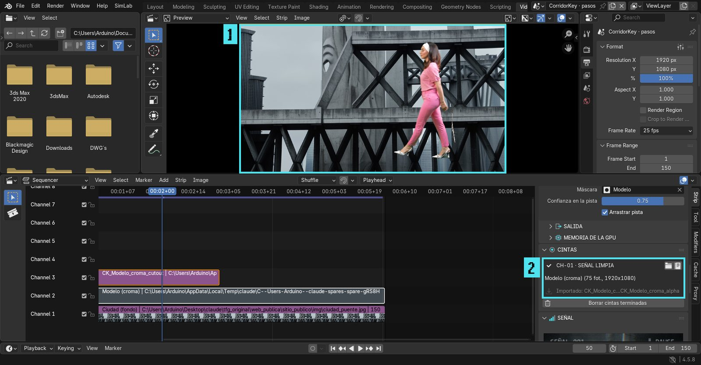
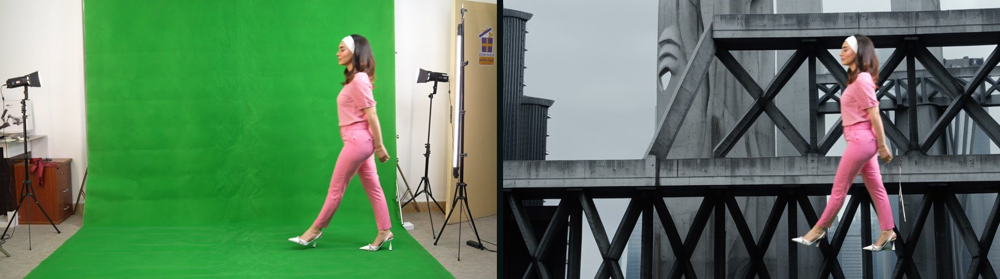
05 · escena 3D y colmapRecortar dentro de la escena
No hace falta exportar nada: el addon recorta lo que ya está en la escena y deja el resultado en el mismo sitio. En la Vista 3D, con el origen en Automático, mira lo que tienes seleccionado.
Un plano de imagen (Image as Plane)
Importa el vídeo o la secuencia con Añadir › Imagen › Malla plana (Image as Plane), selecciona el plano y pulsa Grabar recorte. Al terminar, la imagen del plano se cambia por el recorte dentro de su propio material y se conecta la transparencia. El plano conserva su posición, su escala y su animación: puedes moverlo, iluminarlo y renderizarlo con la escena.
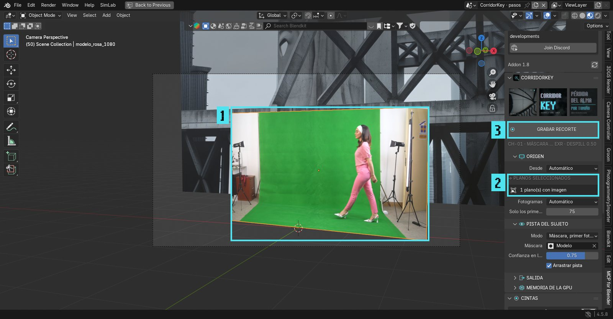
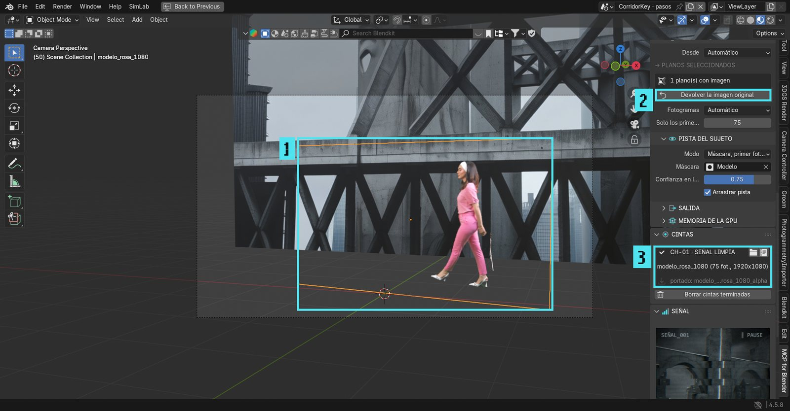
Los planos de COLMAP
Al importar una reconstrucción de COLMAP con Photogrammetry Importer y la opción Add image planes, cada cámara trae un plano con su foto. Selecciona todos los planos que quieras y graba el recorte: se procesan juntos, en orden de nombre de archivo, para que el modelo aproveche la continuidad del plano. Cada plano recibe su propio fotograma recortado.
La cámara animada de COLMAP
Con Add animated camera background images, la cámara animada lleva el plano de rodaje como imagen de fondo. Selecciona esa cámara (origen Fondo de la cámara) y graba el recorte:
- El recorte se añade como un segundo fondo, delante, para ver al actor sobre lo 3D en el visor.
- Con Plano pegado a la cámara se crea un plano hijo de la cámara que llena el encuadre a la distancia que elijas. Sale en el render, así que el actor queda compuesto sobre la escena 3D con el mismo movimiento de cámara que resolvió COLMAP. Ponlo más cerca o más lejos para decidir qué objetos 3D le pasan por delante.
Compositor
Con Salida › Nodos en el compositor, el addon añade un nodo Imagen con el recorte y un Alpha Over encima de lo que ya llegaba a la salida del compositor (normalmente las capas de render). Sirve para componer al actor sobre el render final.
06 · pistaMarcar al sujeto con una máscara
La forma más cómoda de indicar quién es el sujeto es dibujarlo con las máscaras de Blender:
- Abre el clip en el Editor de clips y cambia el modo de Seguimiento a Máscara.
- Crea una máscara nueva y, en el primer fotograma del clip, rodea al sujeto con Ctrl + clic. No hace falta precisión: basta con un contorno que lo envuelva.
- En el panel, Pista del sujeto › Modo › Máscara, primer fotograma y elige la máscara.
- Si la máscara está animada a lo largo del plano (roto o máscara basura), usa Máscara, todo el clip.
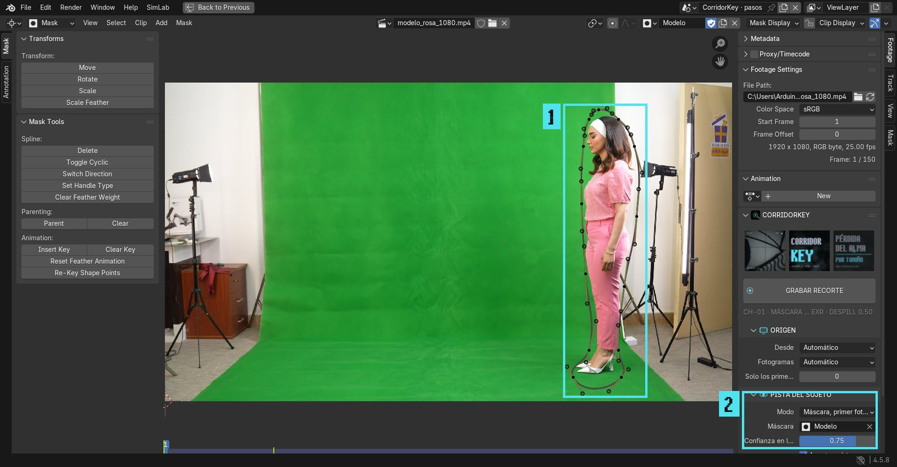
07 · salidaQué sale
| Salida | Contenido |
|---|---|
| Recorte | Color del sujeto sin derrame y con transparencia (sin premultiplicar). Es el que se coloca en el VSE y en el plano. |
| Alfa | Solo el mate en blanco y negro, para usarlo como máscara en el compositor. |
| Frente | Color del sujeto tal cual lo predice el modelo, sin quitar el derrame. |
| Damero | Vista previa sobre damero, para revisar bordes. |
EXR guarda secuencias en HDR lineal, lo mejor para componer. Vídeo guarda MP4 y ProRes 4444 con alfa, más ligero.
Cada trabajo deja su carpeta en //corridorkey/<clip>_v001/, junto al .blend, con los resultados y el registro corridorkey_log.txt.
08 · problemasSi algo falla
| Síntoma | Qué hacer |
|---|---|
| «Sin señal: CorridorKey no está instalado» | Preferencias del addon › Instalar lo que falta. Si ya lo instalaste en otra carpeta, cámbiala en Carpeta de CorridorKey. |
| Error de memoria (CUDA out of memory) | Cierra otros programas que usen la GPU y pon Memoria › Poca VRAM, o Manual con ventana 4 y paso 2. |
| Recorta a quien no es | Usa una pista con máscara sobre el sujeto correcto. |
| Bordes con verde | Sube Quitar derrame a 0,75 o más. |
| Cualquier otro error | En Cintas, el icono de texto abre el registro del trabajo con el mensaje completo. |
09 · cómo se hizoModo de trabajo
El addon se hizo en una sola jornada de trabajo, el 26 de octubre de 2026, con este reparto:
| Quién | Qué |
|---|---|
| Toniño | La idea, qué tenía que hacer y para qué (recortar dentro de Blender, en el VSE, en los Image as Plane y con COLMAP), la estética de Pérdida del Alma, el nombre y las decisiones sobre la marcha: firmar como Toniño, usar fotos del proyecto, que el estilo afecte solo al addon y no a todo Blender, probarlo en Blender 5.0. |
| Claude Code | El asistente de programación con IA de Anthropic. Leyó el repositorio de CorridorKey, propuso la arquitectura, escribió el código, las imágenes de la marca y estas instrucciones, e hizo las pruebas. |
El ciclo de trabajo
- Leer el modelo. Se clonó el repositorio de CorridorKey 2.0 y se estudió
infer.py: qué argumentos acepta, qué escribe y qué mensajes imprime, para luego convertirlos en la barra de progreso. - Diseñar. Se decidió llamar al modelo como proceso externo con su propio entorno (PyTorch no cabe en el Python de Blender) y lanzarlo en segundo plano con una cola, sin congelar Blender.
- Escribir por módulos.
setup.py(instalación),jobs.py(cola),keying.py(preparar e importar),mask_hint.py(máscaras como pista),scene_targets.py(planos, COLMAP, compositor) yui.py(panel). - Probar sin interfaz. Scripts que abren Blender en segundo plano (
blender -b --python), montan una escena, ejecutan el addon y escriben el resultado. Con un plano de croma sintético renderizado en Blender (una cabeza girando sobre verde). - Recortes reales. El instalador del propio addon instaló CorridorKey en el PC1, y los recortes se lanzaron de verdad en la RTX 3050: VSE, Image as Plane, planos tipo COLMAP y cámara. Cada render se revisó a ojo.
- Probar en el Blender abierto. Mediante el puerto del addon MCP (9876) se activó el addon en el Blender de Toniño y se sacaron capturas del panel para revisar cómo se veía.
- Corregir y repetir. Cada fallo encontrado (instalación invisible en
AppData, banner cortado, tamaño 0×0 en secuencias, imágenes reutilizadas en COLMAP, el tema global) se corrigió y se volvió a probar. - Capturas reales. Con un vídeo de croma de uso libre (Pexels) se grabó un recorte de verdad en el Blender abierto,
paso a paso, y se sacaron las capturas de estas instrucciones y de la web en cada momento: instalar, elegir el clip,
dibujar la máscara, grabar, el resultado sobre la ciudad y el Image as Plane. Las prepara
tools/preparar_pasos.py. - Otra versión de Blender. Se descargó Blender 5.0.1 portable (comprobando su suma SHA-256 oficial) y se repitieron las pruebas, sobre todo por el compositor nuevo.
La imagen
El tríptico, la foto, el logo y los iconos los genera tools/make_brand.py con Python (Pillow). Reutiliza las funciones de las piezas de Instagram del proyecto (generar_piezas.py: etalonaje, efecto VHS y fondo de niebla), las fuentes Perdida Señal y Perdida Bloque y fragmentos de los renders sin el protagonista. Para cambiar la imagen, se edita ese script y se vuelve a ejecutar.
10 · créditosCréditos y licencia
Addon, interfaz e imagen: Toniño, para Pérdida del Alma (web). Modelo CorridorKey 2.0: Zachary Harris y Corridor Digital (repositorio), con licencia propia: uso libre también en trabajos comerciales, pero no se puede vender ni ofrecer como servicio de pago, y lo que se publique debe mantener el nombre CorridorKey. El addon es GPL-3.0.